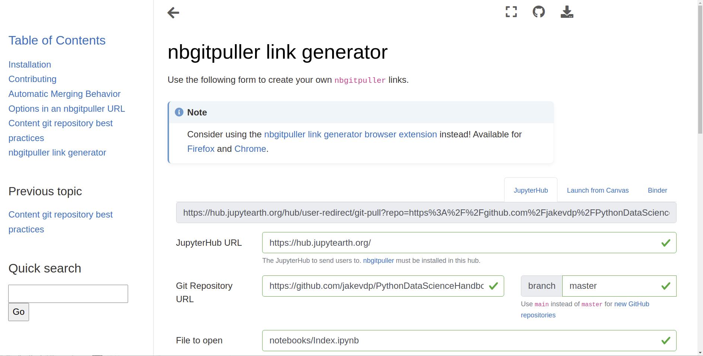
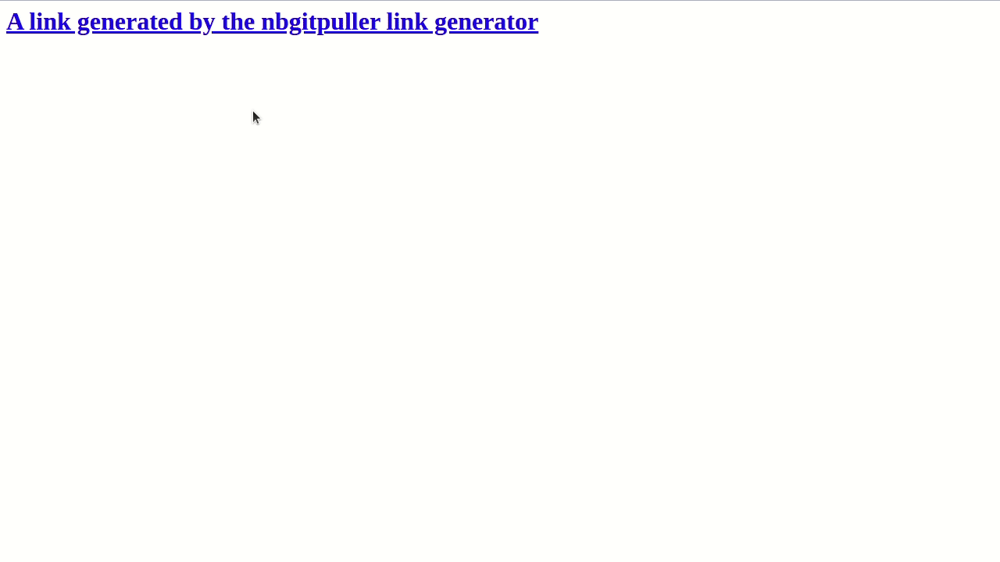

nbgitpuller
Contents
nbgitpuller#
nbgitpuller lets you distribute content to a Jupyter user via the click of a button!
This allows your users to focus on the content without needing to understand git
or other version control machinery.
nbgitpuller provides automatic, opinioned conflict resolution
by using git under the hood.
It is commonly used to distribute content to multiple users of a JupyterHub, though it works just fine on an individual person’s computer, if they have Jupyter installed.
Here’s an example of nbgitpuller in action:
The nbgitpuller link generator is used to create a link.
A user clicks the link, and the content is pulled into a live Jupyter session.

Use nbgitpuller#
See Using nbgitpuller for information about how to use nbgitpuller.
Here’s a short overview:
Ensure your user has
nbgitpullerinstalled. This is commonly done by installing it for all users of a JupyterHub. See the installation instructions for more information.Create an “
nbgitpullerlink” which points to the content you’d like to distribute (e.g., a Jupyter Notebook in a GitHub repository).Tell your user to click the link, and
nbgitpullerwill automatically pull in the content to their file system.
Generate an nbgitpuller link#
There are several ways to generate an nbgitpuller link.
The two easiest ways to do so are:
Via a browser extension to generate links directly from your repository (Chrome extension, Firefox extension
Via a GUI web-app at
nbgitpuller.link
Fore more information about generating nbgitpuller links, see Using nbgitpuller.
When to use nbgitpuller#
Use nbgitpuller when:
You want an easy way to distribute content (notebooks, markdown files, etc) to Jupyter users without requiring them to use
git.You have an alternative method for collecting content from your users, as
nbgitpullerdoes not “push”, it only “pulls”.
You should not use nbgitpuller when:
Users want to push to a
gitrepository that has your content. In this case, you should instruct them to just usegitdirectly, since the assumptions and design of nbgitpuller will surprise you in unexpected ways if you are pushing with git but pulling with nbgitpuller.Users want to perform manual git operations locally. Mixing manual git operations + automatic nbgitpuller operations will cause unwelcome surprises.
Full Contents#
- Installation
- Using
nbgitpuller - Contributing
- Automatic Merging Behavior
- Case 1: The instructor changed a file that the student has not changed
- Case 2: Student & instructor changed different lines in same file
- Case 3: Student & instructor change same lines in same file
- Case 4: Student deletes file locally, but instructor doesn’t
- Case 5: Student creates file manually, but instructor adds file with same name
- Options in an nbgitpuller URL
- Content git repository best practices
- nbgitpuller link generator